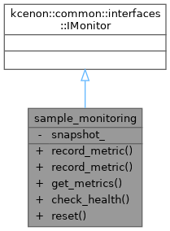

Loading...
Searching...
No Matches
sample_monitoring Class Reference
Inheritance diagram for sample_monitoring:

Collaboration diagram for sample_monitoring:

Public Types | |
| using | VoidResult = kcenon::common::VoidResult |
Public Member Functions | |
| VoidResult | record_metric (const std::string &name, double value) override |
| VoidResult | record_metric (const std::string &name, double value, const std::unordered_map< std::string, std::string > &tags) override |
| kcenon::common::Result< kcenon::common::interfaces::metrics_snapshot > | get_metrics () override |
| kcenon::common::Result< kcenon::common::interfaces::health_check_result > | check_health () override |
| VoidResult | reset () override |
Private Attributes | |
| kcenon::common::interfaces::metrics_snapshot | snapshot_ |
Detailed Description
Definition at line 37 of file multi_process_monitoring_integration.cpp.
Member Typedef Documentation
◆ VoidResult
| using sample_monitoring::VoidResult = kcenon::common::VoidResult |
Definition at line 39 of file multi_process_monitoring_integration.cpp.
Member Function Documentation
◆ check_health()
|
inlineoverride |
Definition at line 74 of file multi_process_monitoring_integration.cpp.
74 {
75 kcenon::common::interfaces::health_check_result result;
76 result.status = kcenon::common::interfaces::health_status::healthy;
79 }
A template class representing either a value or an error.
Definition error_handling.h:252
◆ get_metrics()
|
inlineoverride |
Definition at line 70 of file multi_process_monitoring_integration.cpp.
70 {
72 }
kcenon::common::interfaces::metrics_snapshot snapshot_
Definition multi_process_monitoring_integration.cpp:87
References snapshot_.
◆ record_metric() [1/2]
|
inlineoverride |
Definition at line 41 of file multi_process_monitoring_integration.cpp.
41 {
42 std::cout << formatter::format("{}: {}\n", name, value);
43 snapshot_.add_metric(name, value);
44 return kcenon::common::ok();
45 }
References snapshot_.
◆ record_metric() [2/2]
|
inlineoverride |
Definition at line 47 of file multi_process_monitoring_integration.cpp.
50 {
51 std::cout << formatter::format("{}: {}", name, value);
52 if (!tags.empty()) {
53 std::cout << " [";
54 bool first = true;
55 for (const auto& [k, v] : tags) {
56 if (!first) std::cout << ", ";
57 std::cout << k << "=" << v;
58 first = false;
59 }
60 std::cout << "]";
61 }
62 std::cout << "\n";
63
64 kcenon::common::interfaces::metric_value mv(name, value);
65 mv.tags = tags;
66 snapshot_.metrics.push_back(mv);
67 return kcenon::common::ok();
68 }
References snapshot_.
◆ reset()
|
inlineoverride |
Definition at line 81 of file multi_process_monitoring_integration.cpp.
References snapshot_.
Member Data Documentation
◆ snapshot_
|
private |
Definition at line 87 of file multi_process_monitoring_integration.cpp.
Referenced by get_metrics(), record_metric(), record_metric(), and reset().
The documentation for this class was generated from the following file:
- examples/multi_process_monitoring_integration/multi_process_monitoring_integration.cpp